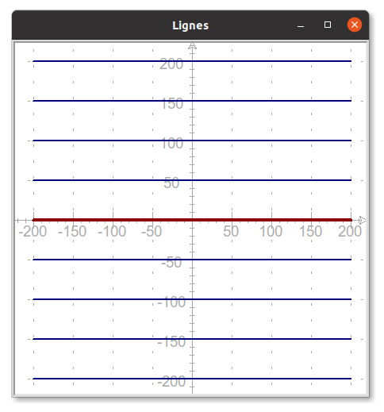

C5 Initiation à Python avec Turtle - Partie 2
Activités
 Activité 1 : Retour sur le jeu du pendu
Activité 1 : Retour sur le jeu du pendu
Rappels
- Télécharger ci-dessous le programme déjà entamé sur le jeu du pendu : Debut du jeu du pendu
- Ouvrir ce fichier dans VS Code, que nous utiliserons à présent comme éditeur
- Relire ce fichier
Interaction avec le joueur
Pour demander une lettre on utilise feuille.textinput(titre, question) qui crée une fenêtre dans laquelle l'utilisateur peut taper sa réponse. Les paramètres titre et question permettent de spécifier le titre de cette fenêtre et d'écrire le texte de la question.
Par exemple :
lettre = feuille.textinput("Proposer une lettre", "Quelle lettre proposez-vous ?")

- Tester cette instruction en l'intégrant dans le programme.
- Cette instruction n'accepte-t-elle qu'une lettre comme voulu dans le programme ?
- Pour vérifier que le joueur propose bien une unique lettre, on écrit une fonction qui renverra la saisie de l'utilisateur seulement si elle est valide. On introduit donc ici l'instruction
return(renvoyer en français), qui permet à une fonction de transmettre un résultat au reste du programme :
1 2 3 4 | |
Il nous reste à valider la saisie avant de renvoyer la lettre via l'utilisation d'une instruction conditionnelle.
Instruction conditionnelle
L'instruction conditionnelle permet de traduire en python le traitement suivant :
si la saisie est une lettre de l'alphabet
alors afficher le message "lettre acceptée" et renvoyer cette lettre
sinon afficher un avertissement et renvoyer une chaîne de caractères vide
1 2 3 4 5 6 7 8 9 10 | |
Les fonctions affiche_message et efface_message vous sont données :
Afficher et effacer des messages
def affiche_message(message):
crayon.penup()
crayon.goto(0,300)
crayon.pendown()
crayon.write(message, font=("Arial",24,"bold"),align="center")
def efface_message():
crayon.penup()
crayon.goto(0,300)
crayon.pendown()
crayon.color("beige")
crayon.write(chr(0x2588)*40, font=("Arial",24,"bold"),align="center")
crayon.color("black")
A faire vous-même
- Copier-coller les trois nouvelles fonctions
- Écrire une boucle
fordans votre programme permettant d'appelerget_lettreà cinq reprises pour tester cette fonction.
Boucle non bornée
La boucle for, déjà rencontrée permet de répéter des instructions un nombre déterminé de fois, on parle dans ce cas, de boucles bornées. La situation ici est différente, on ne connaît pas le nombre d'erreurs que va commettre le joueur avant de découvrir le mot. On utilise une boucle non bornée en spécifiant sa condition d'arrêt, en français cela donne : tant que le nombre d'erreurs possibles (limité à 6), n'est pas atteint répéter la demande d'une lettre. Ou encore en Python:
nb_erreurs = 0
while nb_erreurs<7:
lettre=get_lettre()
A faire vous-même
Dans votre programme, remplacer la boucle for que vous aviez mise précédemment par les lignes ci-dessus et constater que la boucle est pour le moment infinie puisque la variable nb_erreurs reste à 0.
Encore des instructions conditionnelles ...
Il faut donc mettre à jour l'affichage du jeu en fonction de la réponse du joueur :
- si la lettre fait partie du mot, alors on écrit cette lettre dans la case ou les cases correspondantes ; cette tâche est réalisée par la fonction
ecrit_lettredont la définition vous est donnée :
def ecrit_lettre(mot, lettre):
x = -50*len(mot)//2
for l in mot:
if l == lettre:
crayon.penup()
crayon.goto(x+20,-250)
crayon.pendown()
crayon.write(lettre,font=("Arial",24,"bold"),align="center")
x+=50
- sinon on incrémente le nombre d'erreurs :
nb_erreurs = 0
while nb_erreurs < 7:
lettre = get_lettre()
# On teste si une lettre a bien été proposée (sinon c'est la chaine vide qui est renvoyée)
if lettre != "":
if lettre in MOT:
ecrit_lettre(MOT, lettre)
else:
nb_erreurs+=1
A faire vous-même
Dans votre programme, remplacer la boucle précédente par celle-ci, et vérifier qu'à présent la boucle se termine après 7 erreurs.
Dessin du pendu correspondant au nombre d'erreurs
Après la mise à jour de nb_erreurs, on voudrait modifier en conséquence le dessin du pendu. On doit donc écrire une fonction tracer_pendu qui prend en paramètre le nombre d'erreurs commises par le joueur et trace le dessin correspondant.
A faire vous-même
Compléter la définition de cette fonction :
def tracer_pendu(nb):
if nb == 1:
pendu_1()
elif nb == 2:
pendu_2()
elif nb == ...:
pendu_....
......
Remarquer l'instruction elif contraction de else if.
Appel de cette fonction dans la boucle
A faire vous-même
Compléter la boucle while en y incluant l'appel à cette fonction lorsque le nombre d'erreurs augmente.
Victoire du joueur
Ajouter les instructions permettant la prise en compte de la victoire du joueur et l'arrêt du jeu dans ce cas.
Activité 2 : Les listes de Python
Activité 3 : Parcours d'une liste
Cours
Vous pouvez télécharger une copie au format pdf du diaporama de synthèse de cours présenté en classe :
Attention
Ce diaporama ne vous donne que quelques points de repères lors de vos révisions. Il devrait être complété par la relecture attentive de vos propres notes de cours et par une révision approfondie des exercices.
QCM
1. Quelle instruction permet de tester si la variable essais vaut 10 ?
- a)
if essais=10 - b)
if essais==10 - c)
if essais==10: - d)
if essais in 10:
- a)
if essais=10 - b)
if essais==10 - c)
if essais==10: - d)
if essais in 10:
2. Une boucle while :
- a) s'exécute tant qu'une condition est vraie et donc peut être infinie.
- b) s'exécute un nombre prédéfinie de fois
- c) s'exécute toujours une infinité de fois
- d) s'exécute jusqu'à ce que l'utilisateur réponde correctement
- a) s'exécute tant qu'une condition est vraie et donc peut être infinie.
- b)
s'exécute un nombre prédéfinie de fois - c)
s'exécute toujours une infinité de fois - d)
s'exécute jusqu'à ce que l'utilisateur réponde correctement
3. Quel sera le résultat de l'exécution du programme Python suivant ?
n = 5
p = 1
while n>0:
p = p*2
- a) Une boucle infinie
- b) Une boucle se répétant cinq fois
- c) Une
Syntax Error - d) Une
Indentation Error
- a)
Une boucle infinie - b)
Une boucle se répétant cinq fois - c)
UneSyntax Error - d) Une
Indentation Error
4. Quelles seront les valeurs des variables s et i à la fin de l'exécution du programme suivant ?
s = 0
i = 1
while i < 5:
s = s + i
i = i + 1
- a)
s=10eti=4 - b)
s=10eti=5 - c)
s=15eti=5 - d) Aucunes car ce programme produit une erreur.
- a)
s=10eti=4 - b)
s=10eti=5 - c)
s=15eti=5 - d)
Aucunes car ce programme produit une erreur.
5. Quelle instruction permet d'exécuter une boucle tant que les variables a et b sont toutes les deux inférieures strictement à 10.
- a)
while a<10 or b<10 - b)
while a<10 or b<10: - c)
while a<10 and b<10 - d)
while a<10 and b<10:
- a)
while a<10 or b<10 - b)
while a<10 or b<10: - c)
while a<10 and b<10 - d)
while a<10 and b<10:
6. Quel est la valeur de la variable b après exécution de ce programme :
a = 10
if a%2==0:
b=1
else:
b=2
- a)
b=1 - b)
b=2 - c)
b=10 - d) Aucune car ce programme produit une erreur
- a)
b=1 - b)
b=2 - c)
b=10 - d)
Aucune car ce programme produit une erreur
7. Quel sera la valeur de la variable compteur après l'exécution du programme suivant ?
compteur = 1
compteur += 1
- a) Aucune car
+= 1provoque une erreur - b)
compteurvaudra 2 car+= 1permet d'augmenter de 1 une variable - c)
compteurvaudra 0 car+= 1permet de diminuer de 1 une variable - d)
compteurvaudra 1 car+= 1ne modifie pas sa valeur
- a)
Aucune car+= 1provoque une erreur - b)
compteurvaudra 2 car+= 1permet d'augmenter de 1 une variable - c)
compteurvaudra 0 car+= 1permet de diminuer de 1 une variable - d)
compteurvaudra 1 car+= 1ne modifie pas sa valeur
8. Que vaut la variable a après exécution de l'instruction a=[0.5*x for x in range(4)] ?
- a)
[0.0,0.5,1.0,1.5,2.0] - b)
[0,1,2,3,4] - c)
[0,1,2,3] - d)
[0.0,0.5,1.0,1.5]
- a)
[0.0,0.5,1.0,1.5,2.0] - b)
[0,1,2,3,4] - c)
[0,1,2,3] - d)
[0.0,0.5,1.0,1.5]
9. Si alpha=["A","B","C","D","E","F","G","H"] quelle est l'expression permettant d'accéder à la lettre "E" ?
- a)
alpha4 - b)
alpha[4] - c)
alpha(4) - d)
alpha.E
- a)
alpha4 - b)
alpha[4] - c)
alpha(4) - d)
alpha.E
Exercices
Exercice 1 : Lignes
-
En utilisant une boucle
forcontenant une instruction conditionnelle, écrire un programme Python permettant de tracer la figure suivante :  La ligne centrale est tracé avec un crayon d'épaisseur 4 et en couleur darkred, toutes les autres lignes sont d'épaisseur 2 et en couleur navy. -
Modifier l'instruction conditionnelle contenue dans le boucle
forde façon à ce que les lignes au dessus de la ligne centrale soient tracées en couleur green.
Exercice 2 : Suite de carrés
Ecrire un programme python permettant de dessiner la figure ci-dessous :
 Votre programme devra contenir :
Votre programme devra contenir :
- la définition d'une fonction
carreet des appels à cette fonction, - une boucle,
- une instruction conditionnelle.
Exercice 3 : Génération de listes en Python
-
On considère le programme suivant :
liste1 = [0]*100 liste2 = [0 for k in range(100)] liste3 = [] for k in range(100): liste3.append(0)- Quel est le contenu de chacune des listes ?
- Indiquer par quel procédé chacune de ces listes a été crée.
-
Ecrire un programme python permettant de créer les listes suivantes :
- Une liste contenant 12 fois le chiffre 7.
- La liste des nombres entiers de 1 à 100.
-
Une liste contenant 1000 nombres tirés au sort entre 1 et 6.
Aide
On rappelle que la fonction
randintpeut être importer depuis le modulerandom, elle permet de tirer un nombre en deux valeursaetbdonnées en paramètres. -
La liste des cubes des entiers de 1 à 10.
Exercice 4 : Parcours de listes en Python
On suppose qu'on dispose d'une liste de notes, on veut écrire une fonction qui renvoie le nombres de notes qui sont en dessous de la moyenne.
-
On considère une première version de cette fonction :
def inferieur_moyenne(liste_notes): nb = 0 for note in liste_notes: if .....: nb = ....... return ...- Recopier et compléter cette fonction
- Tester cette fonction
-
Voici une deuxième version de cette fonction :
def inferieur_moyenne(liste_notes): nb = 0 for indice in ........: if ........... : nb = ....... return ...- Recopier et compléter cette fonction
- Tester cette fonction
-
Quelle est la différence principale entre ces deux versions de la même fonction ?
-
Ecrire les fonctions suivantes :
max_listequi prend comme argument une liste non vide de nombres et renvoie le plus grand de ces nombres.somme_listequi prend comme argument une liste non vide de nombres et renvoie la somme de ces nombres.moyenne_listequi prend comme argument une liste non vide de nombres et renvoie la moyenne de ces nombres.
Exercice 5 : Recherche d'occurences
- Ecrire une fonction
present(elt,liste)qui renvoieTruesieltse trouve dans la listelisteetFalsesinon. Par exemplepresent(3,[1,4,5]renvoieFalse, par contrepresent(4,[1,4,5]renvoieTrue. - Tester cette fonction
- Ecrire une fonction
occurence(elt,liste)qui renvoie le nombre de fois oùeltapparaît dansliste.
Exercice 6 : Chaines de caractères
- Ecrire une fonction
compte_caractere(s,c)qui prendre en argument une chaîne de caractèreset un caractèrecet retourne le nombre de fois oùcapparait danss. Par exemplecompte_caractere("informatique","i"")renvoie 2 puisqu'il y a deuxidans le motinformatique - Ecrire une fonction
inversequi prend en argument une chaîne de caractère et retourne cette chaîne écrite à l'envers. Par exemple,inverse("Python")donnera"nohtyP". - Ecrire une fonction
comparequi prend en argument deux chaînes de caractères et renvoie le nombre de fois où ces deux chaines on la même lettre au même emplacement. Par exemple,compare("Python","Poterie")retourne 2 car le "P" et le "t" sont situés aux mêmes emplacements dans les deux mots.